Chapter 15 Count Data Regression
15.1 Introduction of Count Data Regression
- Classical count data models:
- Poisson regression
- Negative binomial regression (including geometric regression)
- Quasi-Poisson regression
- Generalized count data models:
- Zero-inflation models
- Hurdle models
- NegBin-P model
- Heterogeneous NegBin model (NB-H)
- Single-index models: o Poisson, quasi-Poisson, geometric, negative binomial, NB-P
- Multiple-index models: o zero-inflation models, hurdle models, NB-H
Count data models in \(\mathrm{R}\):
- stats: Poisson and quasi-Poisson models via glm0
- MASS: negative binomial and geometric regression via glm.nb()
- pscl: zero-inflation and hurdle models via zeroinfl() and hurdle 0 ・ER: testing for equildispersion via dispersiontest()
- flexmix: finite mixtures of Poissons via flexmix()
- gamlss: Poisson-inverse Gaussian (PIG) regression via gamlss()
15.2 Poisson regression
15.2.1 Model
The Poisson model is used to describe the frequency distribution of an event found per unit time, unit area or unit volume. It is usually used to describe the distribution of rare events (ie, small probability) events. When you want to analyze the number of certain events over a period of time or the frequency in the contingency table, counting data occurs. Sometimes, especially if events occur frequently, a normal distribution approximation is sufficient for analysis. However, if there are only a few small values as numbers, a multi-category target variable model can be used. However, considering the discrete distribution of the special attributes of the count data is usually the most appropriate.
Poisson模型用于描述单位时间、单位面积或者单位容积内某事件发现的频数分布情况，通常用于描述稀有事件（即小概率）事件发生数的分布。当要分析一段时间内某些事件的数量或列联表中的频率时，会发生计数数据。 有时，尤其是如果事件频繁发生时，正态分布近似值足以进行分析。 但是，如果只有几个小的值作为数字，则可以使用多类别目标变量的模型。 但是，考虑到计数数据的特殊属性的离散分布通常是最合适的
Let y be a variable that can only have non-negative integer values. We assume the probability that \(y\) is equal to a certain number r (where \(\lambda\) is the expected value of \(y\))
\[\operatorname{Pr}(y=r)=\frac{\lambda^{r} e^{-\lambda}}{r !}, \quad r=0,1,2, \ldots\]
An unusual property of the Poisson distribution is that the mean and variance are equal
\[\mathrm{E}(y)=\operatorname{var}(y)=\lambda\]
The link function is \[\lambda_{i}=\eta_{i}=\boldsymbol{x}_{i}^{\prime} \boldsymbol{\beta}\]
\[\log \left(\lambda_{i}\right)=\eta_{i}=\boldsymbol{x}_{i}^{\prime} \boldsymbol{\beta}=\beta_{0}+\beta_{1} x_{i 1}+\ldots+\beta_{k} x_{i k}\]
Maximum likelihood-based parameter estimation
\[{\displaystyle \lambda :=\operatorname {E} (Y\mid x)=e^{\theta 'x},\,}\]
the Poisson distribution’s probability mass function is given by
\[{\displaystyle p(y\mid x;\theta )={\frac {\lambda ^{y}}{y!}}e^{-\lambda }={\frac {e^{y\theta 'x}e^{-e^{\theta 'x}}}{y!}}}\]
the method of maximum likelihood is:
\[{\displaystyle L(\theta \mid X,Y)=\prod _{i=1}^{m}{\frac {e^{y_{i}\theta 'x_{i}}e^{-e^{\theta 'x_{i}}}}{y_{i}!}}.}\]
Log-likelihood:
\[{\displaystyle \ell (\theta \mid X,Y)=\log L(\theta \mid X,Y)=\sum _{i=1}^{m}\left(y_{i}\theta 'x_{i}-e^{\theta 'x_{i}}-\log(y_{i}!)\right).}\]
With the kern.term equal 0
\[{\frac {\partial \ell (\theta \mid X,Y)}{\partial \theta }}=0\]
15.2.2 Interpretation of Estimated Coefficients
For Fitted Model \[ \widehat{\lambda}=\exp \left\{\widehat{\beta}_{0}+\widehat{\beta}_{1} x_{1}+\cdots+\widehat{\beta}_{k} x_{k}\right\} \] - If a predictor variable \(x_{1}\) is numr \(+\), then the exponentiated estimate of the respective regression coefficient \(\exp \left\{\hat{\beta}_{1}\right\}\) represents an estimated rate ratio corresponding to a unit increase in the predictor. Indeed, \[\frac{\widehat{\lambda}\left(x_{1}+1, x_{2}, \ldots, x_{k}\right)}{\widehat{\lambda}\left(x_{1}, x_{2}, \ldots, x_{k}\right)}=\frac{\exp \left\{\widehat{\beta}_{0}+\widehat{\beta}_{1}\left(x_{1}+1\right)+\widehat{\beta}_{2} x_{2}+\cdots+\widehat{\beta}_{k} x_{k}\right\}}{\exp \left\{\widehat{\beta}_{0}+\widehat{\beta}_{1} x_{1}+\cdots+\widehat{\beta}_{k} x_{k}\right\}}=\exp \left\{\widehat{\beta}_{1}\right\} .\] Equivalently, \(\left(\exp \left\{\widehat{\beta}_{1}\right\}-1\right) \cdot 100 \%\) may be interpreted as the estimated percent change in rate when \(x_{1}\) increases by one unit, while all the other predictors are held fixed. - If a predictor variable \(x_{1}\) is an indicator variable, then the exponentiated estimated coefficient \(\exp \left\{\hat{\beta}_{1}\right\}\) represents the ratio of the estimated rates when \(x_{1}=1\) and when \(x_{1}=0 .\) To see that, we write \[ \frac{\widehat{\lambda}\left(x_{1}=1, x_{2}, \ldots, x_{k}\right)}{\widehat{\lambda}\left(x_{1}=0, x_{2}, \ldots, x_{k}\right)}=\frac{\exp \left\{\widehat{\beta}_{0}+\widehat{\beta}_{1} \cdot 1+\widehat{\beta}_{2} x_{2}+\cdots+\widehat{\beta}_{k} x_{k}\right\}}{\exp \left\{\widehat{\beta}_{0}+\widehat{\beta}_{1} \cdot 0+\cdots+\widehat{\beta}_{k} x_{k}\right\}}=\exp \left\{\widehat{\beta}_{1}\right\} \] Equivalently, the quantity \(\exp \left\{\widehat{\beta}_{1}\right\} \cdot 100 \%\) represents the estimated percent ratio of rates when \(x_{1}=1\) and when \(x_{1}=0,\) while the other predictors are held constant.
15.2.3 Overdispersion
泊松分布的方差和均值相等。当响应变量观测的方差比依据泊松分布预测的方差大时，泊松 回归可能发生过度离势overdispersion。由于处理计数型数据时经常发生过度离势，且过度离势会对结果的可解 释性造成负面影响，因此我们需要花些时间讨论该问题。 可能发生过度离势的原因有如下几个(Coxe et al.，2009)。
- 遗漏了某个重要的预测变量。
- 可能因为事件相关。在泊松分布的观测中，计数中每次事件都被认为是独立发生的。以癫痫数据为例，这意味着对于任何病人，每次癫痫发病的概率与其他癫痫发病的概率相 互独立。但是这个假设通常都无法满足。对于某个的病人，在已知他已经发生了39次癫痫时，第一次发生癫痫的概率不可能与第40次发生癫痫的概率相同。
- 在纵向数据分析中，重复测量的数据由于内在群聚特性可导致过度离势。
If the Residual Deviance is greater than the degrees of freedom, then over-dispersion exists. This means that the estimates are correct, but the standard errors (standard deviation) are wrong and unaccounted for by the model.
For the model wizh over-dispersion, the \(\mathrm{E}(y)=\operatorname{var}(y)=\lambda\) will not be meet. In fact, the variance is usually much higher than this.
Equivalently, we can say that the reason for the overdispersion is that the equation \[\log \lambda_{i}=\beta_{0}+\beta_{1} x_{i 1}+\beta_{2} x_{i 2}+\ldots+\beta_{k} x_{i k}\] has no random disturbance term in, so explanatory variables can be omitted. (The random error term will produce greater variance in y.)
Consequence
While overdispersion doesn’t bias the coefficients, it does lead to underestimates of the standard errors and overestimates of chi-square statistics. Overdispersion also implies that conventional maximum likelihood estimates are not efficient, meaning that other methods can produce coefficients with less sampling variability.
尽管过度分散不会使系数产生偏差，但会导致对标准误的低估和对卡方统计量的高估。过度分散还意味着传统的最大似然估计效率不高，这意味着其他方法可以产生采样变异性较小的系数。
Way Out
ignore the lack of efficiency of conventional estimates, correct the standard errors and chi-squares (Agresti 2002)
愿意忽略传统估算方法效率低下的问题，那么只需校正标准误差和卡方即可（Agresti 2002）。校正与分组二项式情况相同：取拟合优度卡方与其自由度的比率，并将结果称为C。将卡方统计量除以每个系数乘以C。每个系数的标准误差乘以C的平方根。唯一的歧义是，我们有两个拟合优度卡方，偏差和皮尔森卡方。我们应该使用哪一个？在大多数情况下，它们会相当接近，但是拟似然估计理论建议使用Pearson卡方（McCullagh and Nelder 1989）。在GENMOD中，可以通过将SCALE = P（对于Pearson）或SCALE = D（对于偏差）作为MODEL语句中的选项来自动调用刚刚描述的更正。
*** Scale parameter: 每个输出都包含一个比例参数，如上所述，该参数只是皮尔逊卡方的平方根除以自由度;
PROC GENMOD DATA=postdoc;
MODEL cits = age mar doc ag und / D=P SCALE=P;
RUN; 15.2.4 Adjustment for Varying Time Spans
泊松分布（或将其推广为负二项式）非常适合描述在一定时间间隔内发生的事件计数。在前面的示例中，文章和引文是在一定时间段内进行计数的。其他例子包括五年内被捕的次数，一年内感冒的次数或一个月内夫妻之间的争吵次数。如果时间间隔的长度对于样本中的每个个体都相同，则已经描述的方法可以正常工作。但是，如果对不同的个人在不同的时间长度内计算事件，则显然需要某种标准化。对于普通回归分析，我们可以简单地将每个事件的事件计数除以时间间隔的长度，然后将所得比率与独立变量进行回归。但是，这不适用于Poisson回归，因为按时间除法意味着结果变量不再具有Poisson分布。相反，我们将时间整合到模型中。如果ti是个体i的观察间隔的长度，则假定在该间隔内发生的事件数（yi）具有泊松分布
\[\operatorname{Pr}\left(y_{i}=r\right)=\frac{\left(\lambda_{i} t_{i}\right)^{r} e^{-\lambda_{t_{i}}}}{r !}, \quad r=0,1,2, \ldots\]
\[\begin{aligned} \log E\left(y_{i}\right) &=\log \left(\lambda_{i} t_{i}\right) \\ &=\log \left(t_{i}\right)+\log \left(\lambda_{i}\right) \\ &=\log \left(t_{i}\right)+\beta_{0}+\beta_{1} x_{i 1}+\beta_{2} x_{i 2}+\ldots+\beta_{k} x_{i k} \end{aligned}\]
注意，如果每个人的\(t_i\)都相同，则该项可以吸收到截距\(β_0\)中。在GENMOD中，只需使用MODEL语句中的选项将log t声明为OFFSET变量。
DATA prog2;
SET prognosi;
lmin=LOG(minutes);
RUN;
PROC GENMOD DATA=prog2;
MODEL lengthpx=ptage ptsex ezcompt mdlikept surgeon claims /
OFFSET=lmin D=P;
RUN;15.2.5 SAS implementation using PROC GENMOD
Both distributions are highly skewed, especially citation counts. Neither distribution would pass a statistical test for the Poisson distribution, but as I noted earlier, that’s not essential for the model to be correct.
## estimate Poisson regressions for articles and citations
## Fit a loglinear Poisson regression, use the DIST=POISSON option,
which can be abbreviated D=P
## Link Function Log
PROC GENMOD DATA=postdoc;
MODEL arts = age mar doc ag und / DIST=POISSON;
PROC GENMOD DATA=postdoc;
MODEL cits = age mar doc ag und / D=P;
RUN;15.2.6 R implementation
## Prepare the dataset
data(breslow.dat, package = "robust")
names(breslow.dat)## [1] "ID" "Y1" "Y2" "Y3" "Y4" "Base" "Age" "Trt" "Ysum"
## [10] "sumY" "Age10" "Base4"summary(breslow.dat[c(6, 7, 8, 10)])## Base Age Trt sumY
## Min. : 6.00 Min. :18.00 placebo :28 Min. : 0.00
## 1st Qu.: 12.00 1st Qu.:23.00 progabide:31 1st Qu.: 11.50
## Median : 22.00 Median :28.00 Median : 16.00
## Mean : 31.22 Mean :28.34 Mean : 33.05
## 3rd Qu.: 41.00 3rd Qu.:32.00 3rd Qu.: 36.00
## Max. :151.00 Max. :42.00 Max. :302.00## plot distribution of post-treatment seizure counts
## high degree of skewness.
opar <- par(no.readonly = TRUE)
par(mfrow = c(1, 2))
attach(breslow.dat)
hist(sumY, breaks = 20, xlab = "Seizure Count", main = "Distribution of Seizures")
boxplot(sumY ~ Trt, xlab = "Treatment", main = "Group Comparisons")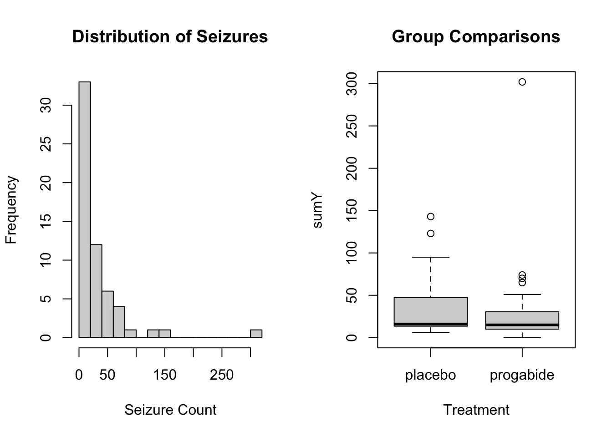
par(opar)
## fit regression
fit <- glm(sumY ~ Base + Age + Trt, data = breslow.dat, family = poisson())
summary(fit)##
## Call:
## glm(formula = sumY ~ Base + Age + Trt, family = poisson(), data = breslow.dat)
##
## Deviance Residuals:
## Min 1Q Median 3Q Max
## -6.0569 -2.0433 -0.9397 0.7929 11.0061
##
## Coefficients:
## Estimate Std. Error z value Pr(>|z|)
## (Intercept) 1.9488259 0.1356191 14.370 < 2e-16 ***
## Base 0.0226517 0.0005093 44.476 < 2e-16 ***
## Age 0.0227401 0.0040240 5.651 1.59e-08 ***
## Trtprogabide -0.1527009 0.0478051 -3.194 0.0014 **
## ---
## Signif. codes: 0 '***' 0.001 '**' 0.01 '*' 0.05 '.' 0.1 ' ' 1
##
## (Dispersion parameter for poisson family taken to be 1)
##
## Null deviance: 2122.73 on 58 degrees of freedom
## Residual deviance: 559.44 on 55 degrees of freedom
## AIC: 850.71
##
## Number of Fisher Scoring iterations: 5## interpret model parameters
coef(fit)## (Intercept) Base Age Trtprogabide
## 1.94882593 0.02265174 0.02274013 -0.15270095exp(coef(fit))## (Intercept) Base Age Trtprogabide
## 7.0204403 1.0229102 1.0230007 0.8583864## Evaluate Over-Dispersion of the Poisson model.
library(qcc)
qcc.overdispersion.test(breslow.dat$sumY, type = "poisson")##
## Overdispersion test Obs.Var/Theor.Var Statistic p-value
## poisson data 62.87013 3646.468 0## fit model with quasipoisson
fit.od <- glm(sumY ~ Base + Age + Trt, data = breslow.dat,
family = quasipoisson())
summary(fit.od)##
## Call:
## glm(formula = sumY ~ Base + Age + Trt, family = quasipoisson(),
## data = breslow.dat)
##
## Deviance Residuals:
## Min 1Q Median 3Q Max
## -6.0569 -2.0433 -0.9397 0.7929 11.0061
##
## Coefficients:
## Estimate Std. Error t value Pr(>|t|)
## (Intercept) 1.948826 0.465091 4.190 0.000102 ***
## Base 0.022652 0.001747 12.969 < 2e-16 ***
## Age 0.022740 0.013800 1.648 0.105085
## Trtprogabide -0.152701 0.163943 -0.931 0.355702
## ---
## Signif. codes: 0 '***' 0.001 '**' 0.01 '*' 0.05 '.' 0.1 ' ' 1
##
## (Dispersion parameter for quasipoisson family taken to be 11.76075)
##
## Null deviance: 2122.73 on 58 degrees of freedom
## Residual deviance: 559.44 on 55 degrees of freedom
## AIC: NA
##
## Number of Fisher Scoring iterations: 5## Comparing The Models
## The coefficients are the same, but the standard errors are different
library(arm)
coef1 = coef(fit)
coef2 = coef(fit.od)
se.coef1 = se.coef(fit)
se.coef2 = se.coef(fit.od)
model.both <- cbind(coef1, se.coef1, coef2, se.coef2, exponent = exp(coef1))
model.both ## coef1 se.coef1 coef2 se.coef2 exponent
## (Intercept) 1.94882593 0.1356191170 1.94882593 0.465091481 7.0204403
## Base 0.02265174 0.0005093011 0.02265174 0.001746594 1.0229102
## Age 0.02274013 0.0040239969 0.02274013 0.013799874 1.0230007
## Trtprogabide -0.15270095 0.0478051047 -0.15270095 0.163942573 0.8583864## Predicting
## predict(poisson.model2, newdata = newdata, type = "response")
## plot regression coefficients for poisson.model2
library(jtools)
plot_summs(fit.od, scale = TRUE, exp = TRUE)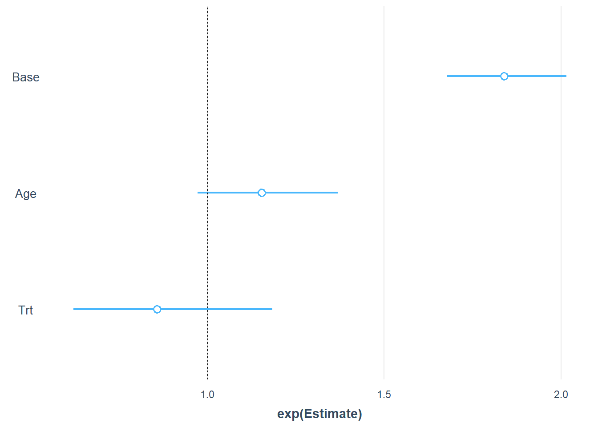
plot_summs(fit, fit.od, scale = TRUE, exp = TRUE)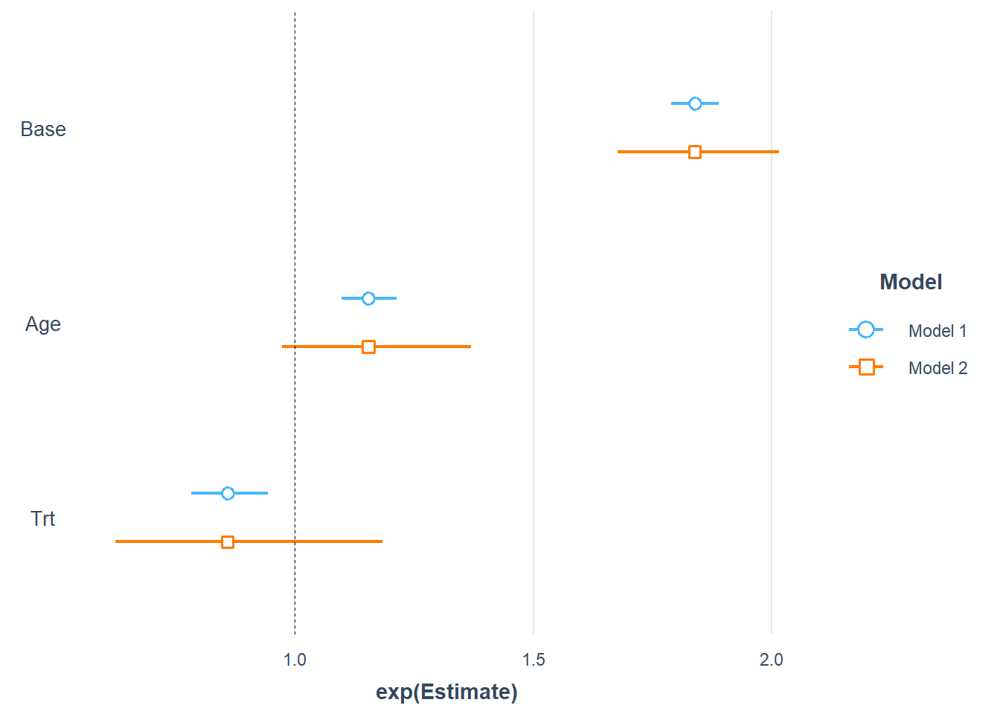
15.3 Negative Binomial Regression
15.3.1 Model
Negative binomial regression can be used for over-dispersed count data, that is when the conditional variance exceeds the conditional mean. It can be considered as a generalization of Poisson regression since it has the same mean structure as Poisson regression and it has an extra parameter to model the over-dispersion. If the conditional distribution of the outcome variable is over-dispersed, the confidence intervals for the Negative binomial regression are likely to be narrower as compared to those from a Poisson regression model.
负二项式回归可用于过度分散的计数数据，即条件方差超过条件均值时。 它可以被认为是泊松回归的推广，因为它具有与泊松回归相同的平均结构，并且它有一个额外的参数来模拟过度离散。 如果结果变量的条件分布过度分散，则负二项式回归的置信区间可能比泊松回归模型的置信区间更窄。
Assuming \(y_{i} \mid x_{i}\) negative binomial (NB) distribution, it may be a gamma mixed form of Poisson distribution. A diagnosis of its probability density function is \[ f(y; \mu, \theta)=\frac{\Gamma(y+\theta)}{\Gamma(\theta) \cdot y !} \cdot \frac{\mu^{y} \cdot \theta^ {\theta}}{(\mu+\theta)^{y+\theta}} \] The mean value \(\mu\) and the shape parameter \(\theta; \Gamma(\cdot)\) is the gamma function.
15.3.2 SAS implementation
The negative binomial model is a generalization of the Poisson model. We modify the equation to include the perturbation term, which accounts for overdispersion: \[\log \lambda_{i}=\beta_{0}+\beta_{1} x_{i 1}+\beta_{2} x_{i 2}+\ldots+\beta_{k} x_{i k}+\sigma \varepsilon_{i}\]
We assume that the dependent variable yi has a Poisson distribution and its expected value is \(\lambda_{i}\), given the remainder \(\varepsilon_{i}\). At last, We assume that exp \(\left(\varepsilon_{i}\right)\) has a standard gamma distribution (Agresti 2002). Therefore, \(\mathrm{yi}\) ie㇒ The unconditional distribution is a negative binomial distribution. Negative binomial regression model It can be estimated efficiently by maximum likelihood. In P|ROC GENMOD, just use option D = NB on the MODEL statement to complete:
PROC GENMOD DATA=postdoc;
MODEL cits = age mar doc ag und / D=NB;
RUN;15.3.3 R implementation
Model Assumption
negative binomial models assume the conditional means are not equal to the conditional variances. This inequality is captured by estimating a dispersion parameter (not shown in the output) that is held constant in a Poisson model. Thus, the Poisson model is actually nested in the negative binomial model. We can then use a likelihood ratio test to compare these two and test this model assumption.
require(foreign)
require(ggplot2)
require(MASS)
## Description of the data
dat <- read.dta("https://stats.idre.ucla.edu/stat/stata/dae/nb_data.dta")
dat <- within(dat, {
prog <- factor(prog, levels = 1:3, labels = c("General", "Academic", "Vocational"))
id <- factor(id)
})
summary(dat)## id gender math daysabs prog
## 1001 : 1 female:160 Min. : 1.00 Min. : 0.000 General : 40
## 1002 : 1 male :154 1st Qu.:28.00 1st Qu.: 1.000 Academic :167
## 1003 : 1 Median :48.00 Median : 4.000 Vocational:107
## 1004 : 1 Mean :48.27 Mean : 5.955
## 1005 : 1 3rd Qu.:70.00 3rd Qu.: 8.000
## 1006 : 1 Max. :99.00 Max. :35.000
## (Other):308ggplot(dat, aes(daysabs, fill = prog)) + geom_histogram(binwidth = 1) + facet_grid(prog ~
., margins = TRUE, scales = "free")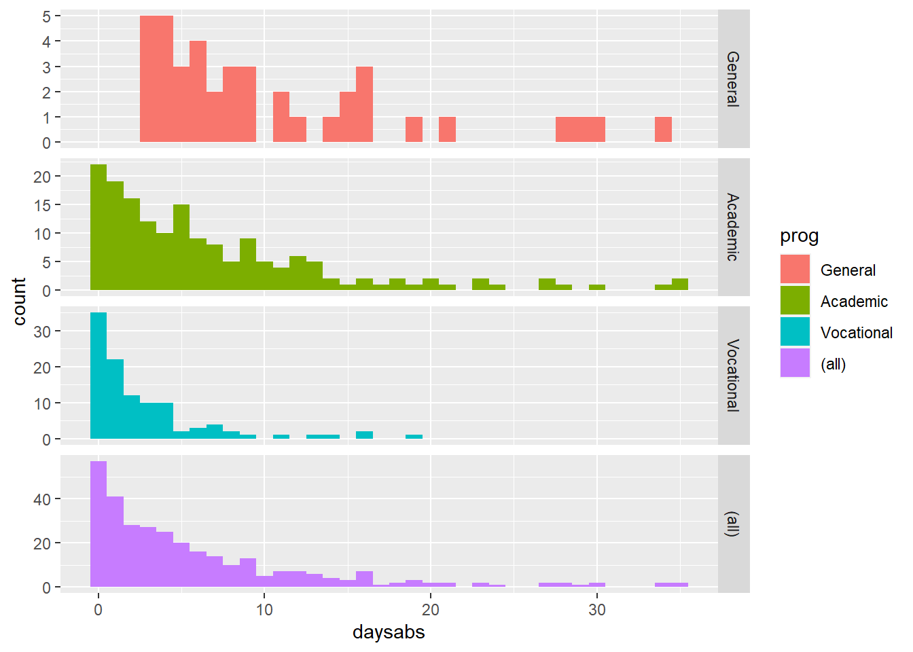
## The variances within each level of prog are higher than the means within each level. These are the conditional means and variances. These differences suggest that over-dispersion is present and that a Negative Binomial model would be appropriate.
with(dat, tapply(daysabs, prog, function(x) {
sprintf("M (SD) = %1.2f (%1.2f)", mean(x), sd(x))
}))## General Academic Vocational
## "M (SD) = 10.65 (8.20)" "M (SD) = 6.93 (7.45)" "M (SD) = 2.67 (3.73)"## Negative binomial regression analysis
m1 <- glm.nb(daysabs ~ math + prog, data = dat)
summary(m1)##
## Call:
## glm.nb(formula = daysabs ~ math + prog, data = dat, init.theta = 1.032713156,
## link = log)
##
## Deviance Residuals:
## Min 1Q Median 3Q Max
## -2.1547 -1.0192 -0.3694 0.2285 2.5273
##
## Coefficients:
## Estimate Std. Error z value Pr(>|z|)
## (Intercept) 2.615265 0.197460 13.245 < 2e-16 ***
## math -0.005993 0.002505 -2.392 0.0167 *
## progAcademic -0.440760 0.182610 -2.414 0.0158 *
## progVocational -1.278651 0.200720 -6.370 1.89e-10 ***
## ---
## Signif. codes: 0 '***' 0.001 '**' 0.01 '*' 0.05 '.' 0.1 ' ' 1
##
## (Dispersion parameter for Negative Binomial(1.0327) family taken to be 1)
##
## Null deviance: 427.54 on 313 degrees of freedom
## Residual deviance: 358.52 on 310 degrees of freedom
## AIC: 1741.3
##
## Number of Fisher Scoring iterations: 1
##
##
## Theta: 1.033
## Std. Err.: 0.106
##
## 2 x log-likelihood: -1731.258library(jtools)
plot_summs(m1, scale = TRUE, exp = TRUE)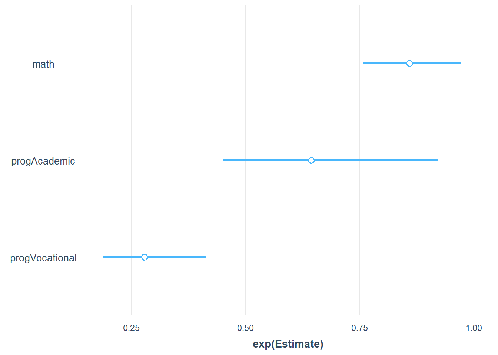
## Model comparsion without prog
m2 <- update(m1, . ~ . - prog)
anova(m1, m2)## Likelihood ratio tests of Negative Binomial Models
##
## Response: daysabs
## Model theta Resid. df 2 x log-lik. Test df LR stat.
## 1 math 0.8558565 312 -1776.306
## 2 math + prog 1.0327132 310 -1731.258 1 vs 2 2 45.04798
## Pr(Chi)
## 1
## 2 1.65179e-10## Checking model assumption
## assume the conditional means are not equal to the conditional variances
m3 <- glm(daysabs ~ math + prog, family = "poisson", data = dat)
pchisq(2 * (logLik(m1) - logLik(m3)), df = 1, lower.tail = FALSE)## 'log Lik.' 2.157298e-203 (df=5)## This strongly suggests the negative binomial model, estimating the dispersion parameter, is more appropriate than the Poisson model.
## confidence intervals for the coefficients by profiling the likelihood function
(est <- cbind(Estimate = coef(m1), confint(m1)))## Estimate 2.5 % 97.5 %
## (Intercept) 2.615265446 2.24205576 3.012935926
## math -0.005992988 -0.01090086 -0.001066615
## progAcademic -0.440760012 -0.81006586 -0.092643481
## progVocational -1.278650721 -1.68348970 -0.890077623## exp(est)
## Predicted values
newdata1 <- data.frame(math = mean(dat$math), prog = factor(1:3, levels = 1:3,
labels = levels(dat$prog)))
newdata1$phat <- predict(m1, newdata1, type = "response")
newdata2 <- data.frame(
math = rep(seq(from = min(dat$math), to = max(dat$math), length.out = 100), 3),
prog = factor(rep(1:3, each = 100), levels = 1:3, labels =
levels(dat$prog)))
newdata2 <- cbind(newdata2, predict(m1, newdata2, type = "link", se.fit=TRUE))
newdata2 <- within(newdata2, {
DaysAbsent <- exp(fit)
LL <- exp(fit - 1.96 * se.fit)
UL <- exp(fit + 1.96 * se.fit)
})
ggplot(newdata2, aes(math, DaysAbsent)) +
geom_ribbon(aes(ymin = LL, ymax = UL, fill = prog), alpha = .25) +
geom_line(aes(colour = prog), size = 2) +
labs(x = "Math Score", y = "Predicted Days Absent")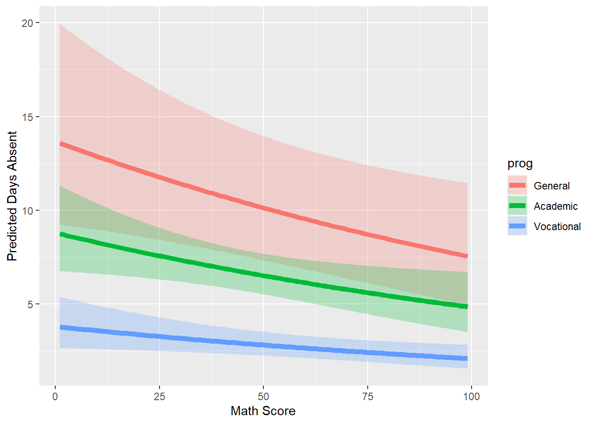
15.4 Zero-truncated Poisson Regression Model
Zero-truncated poisson regression is used to model count data for which the value zero cannot occur.
零截断泊松回归用于对不能出现零值的计数数据进行建模。
15.4.1 Model
If the response variable assumes only positive integer values (no zeros), the response variable y follows a zero-truncated Poisson distribution with the probability mass function \[ \mathbb{P}(Y=y)=\frac{\lambda^{y} \exp \{-\lambda\}}{y !(1-\exp \{-\lambda\})}, \quad y=1,2, \ldots \] \[ \lambda=\exp \left\{\beta_{0}+\beta_{1} x_{1}+\cdots+\beta_{k} x_{k}\right\} \] For a zero-truncated Poisson distribution, the expected value of y is \[\mathbb{E}(y)=\frac{\lambda}{1-\exp \{-\lambda\}}\] This regression is also not a generalized linear model, because the logarithmic link function in \[\lambda=\exp \left\{\beta_{0}+\beta_{1} x_{1}+\cdots+\beta_{k} x_{k}\right\}\] associates linear regression with λ, and λ is not the expected value of y.
15.4.2 SAS Implementation
The procedure fmm (stands for “finite mixture models”) with the option dist=truncpoisson in the model statement may be used to fit a zero-truncated Poisson model.
proc fmm data=data name;
class <list of categorical predictors>;
model response name=<list of predictors>/dist=truncpoisson;
run;
data hospital_stay;
input days gender$ age illness$ @@;
cards;
1 F 31 yes 0 F 28 no 0 M 52 yes
1 M 72 yes 0 F 29 no 0 F 30 no
1 M 74 no 2 M 30 yes 2 F 72 no
1 M 58 no 2 F 28 no 2 F 65 no
2 M 65 no 1 M 52 no 4 M 51 no
2 F 63 no 0 F 31 no 1 F 47 yes
1 M 49 no 2 M 71 yes 2 M 48 no
2 F 47 no 0 F 31 no 3 M 44 yes
3 M 44 no 3 M 54 yes 4 F 72 yes
4 M 56 yes 3 F 73 yes 1 F 46 no
3 M 58 no 4 M 70 yes 2 M 36 no
1 M 50 no 1 M 59 no 0 M 52 no
6 M 68 yes 2 F 41 no 1 M 31 yes
1 M 69 no 3 M 73 no 3 F 77 yes
2 F 54 no 4 M 69 yes 5 M 68 yes
;
/**************************************************/
*** Poisson Regression Model;
proc genmod;
class gender(ref='F') illness(ref='no');
model days=gender age illness/dist=poisson link=log;
run;
/**************************************************/
*** Zero-truncated Poisson Regression Model;
data hospital_days;
set hospital_stay;
if (days>0);
run;
proc format;
value $genderfmt 'F'='ref' 'M'='M';
value $illnessfmt 'yes'='illness' 'no'='ref';
run;
proc fmm;
class gender illness;
model days=gender age illness/dist=truncpoisson;
format gender $genderfmt. illness $illnessfmt.;
run;
#checking model fit: Differencw of -2 Log Likelihood
proc fmm;
model days=/dist=truncpoisson;
run;
data deviance_test;
deviance=115.2-105.2;
pvalue=1-probchi(deviance,3);
run;15.4.3 R implementation
require(foreign)
require(ggplot2)
require(VGAM)
require(boot)
## Description of the data
dat <- read.dta("https://stats.idre.ucla.edu/stat/data/ztp.dta")
dat <- within(dat, {
hmo <- factor(hmo)
died <- factor(died)
})
summary(dat)## stay age hmo died
## Min. : 1.000 Min. :1.000 0:1254 0:981
## 1st Qu.: 4.000 1st Qu.:4.000 1: 239 1:512
## Median : 8.000 Median :5.000
## Mean : 9.729 Mean :5.234
## 3rd Qu.:13.000 3rd Qu.:6.000
## Max. :74.000 Max. :9.000## density of the distribution, does vary across levels of hmo and died,
ggplot(dat, aes(stay)) +
geom_histogram() +
scale_x_log10() +
facet_grid(hmo ~ died, margins=TRUE, scales="free_y")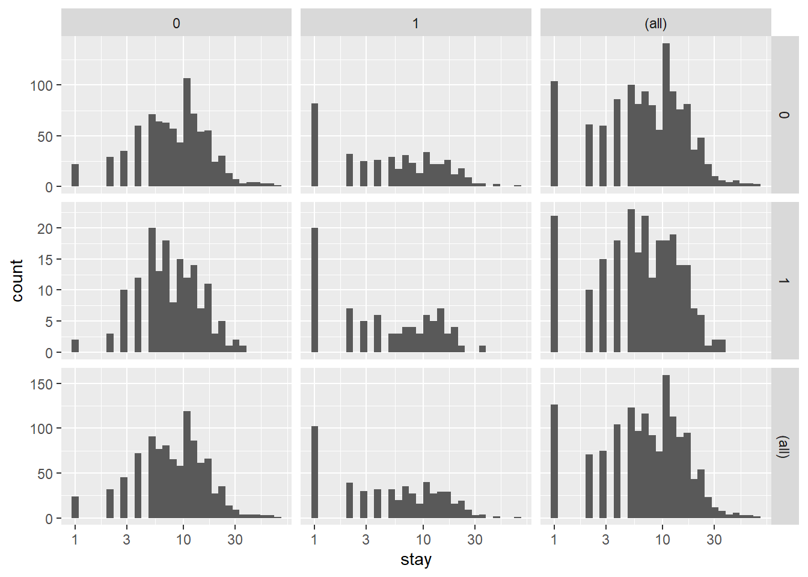
## To further understand the raw data going into each density estimate, we add raw data on top of the violin plots with a small amount of random noise (jitter) to alleviate over plotting. Finally, to get a sense of the overall trend, we add a locally weighted regression line.
ggplot(dat, aes(factor(age), stay)) +
geom_violin() +
geom_jitter(size=1.5) +
scale_y_log10() +
stat_smooth(aes(x = age, y = stay, group=1), method="loess")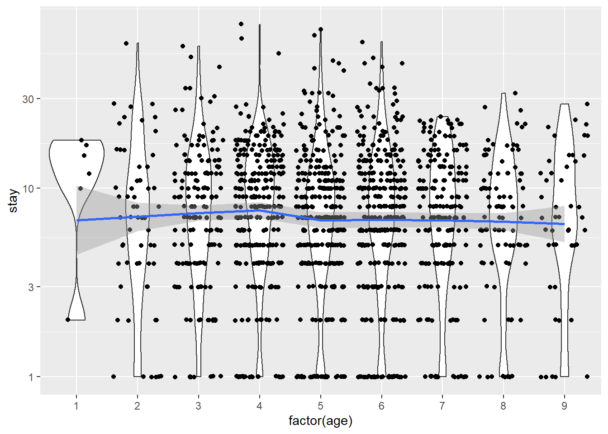
## The distribution of length of stay does not seem to vary much across age groups. This observation from the raw data is corroborated by the relatively flat loess line.
## Zero-truncated Poisson regression
## vglm function in the VGAM package.
## believe the data are poisson, but without zeros. Thus the values are strictly positive poisson
m1 <- vglm(stay ~ age + hmo + died, family = pospoisson(), data = dat)
summary(m1)##
## Call:
## vglm(formula = stay ~ age + hmo + died, family = pospoisson(),
## data = dat)
##
## Coefficients:
## Estimate Std. Error z value Pr(>|z|)
## (Intercept) 2.435808 0.027332 89.119 < 2e-16 ***
## age -0.014442 0.005035 -2.869 0.00412 **
## hmo1 -0.135903 0.023741 -5.724 1.04e-08 ***
## died1 -0.203771 0.018372 -11.091 < 2e-16 ***
## ---
## Signif. codes: 0 '***' 0.001 '**' 0.01 '*' 0.05 '.' 0.1 ' ' 1
##
## Name of linear predictor: loglink(lambda)
##
## Log-likelihood: -6908.799 on 1489 degrees of freedom
##
## Number of Fisher scoring iterations: 3
##
## No Hauck-Donner effect found in any of the estimates## plot of the residuals versus fitted values.
## see where most residuals fall.
output <- data.frame(resid = resid(m1), fitted = fitted(m1))
ggplot(output, aes(fitted, resid)) +
geom_jitter(position=position_jitter(width=.25), alpha=.5) +
stat_smooth(method="loess")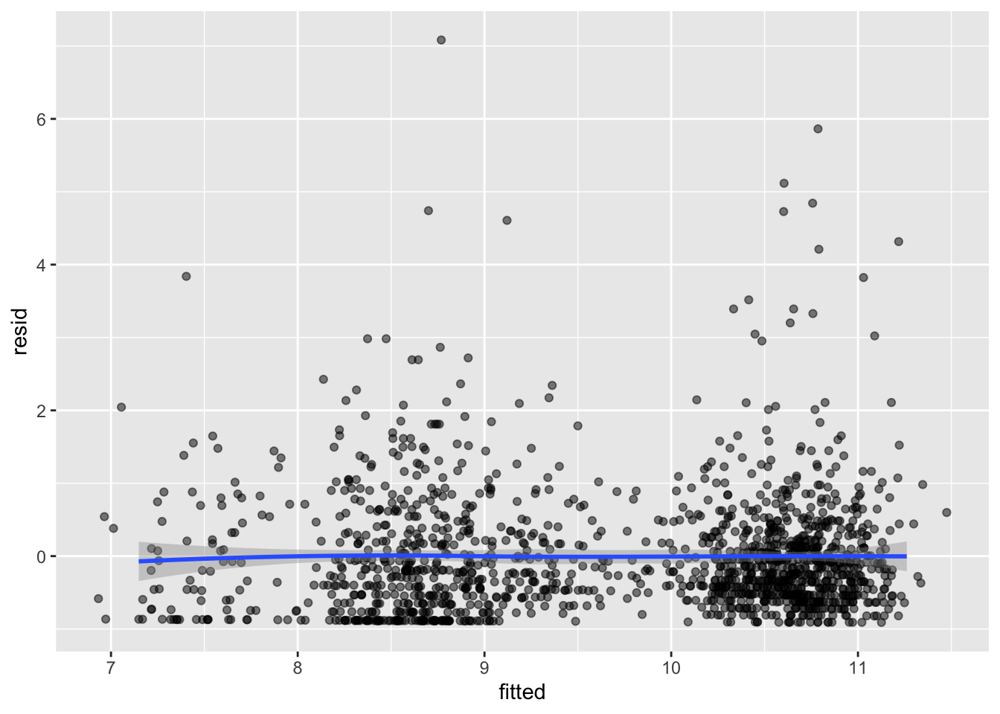
## there are some values that look rather extreme. To see if these have much influence, we can fit lines using quantile regression, these lines represent the 75th, 50th, and 25th percentiles.
ggplot(output, aes(fitted, resid)) +
geom_jitter(position=position_jitter(width=.25), alpha=.5) +
stat_quantile(method="rq")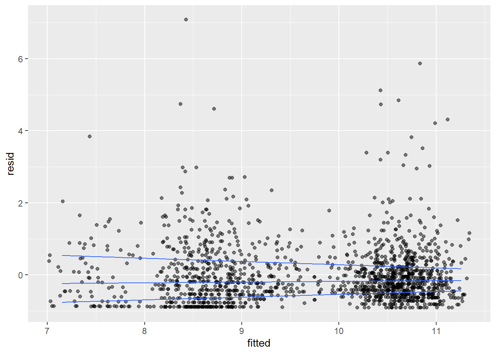
## cut the data into intervals and check box plots for each. We will get the breaks from the algorithm for a histogram.
output <- within(output, {
broken <- cut(fitted, hist(fitted, plot=FALSE)$breaks)
})
ggplot(output, aes(broken, resid)) +
geom_boxplot() +
geom_jitter(alpha=.25)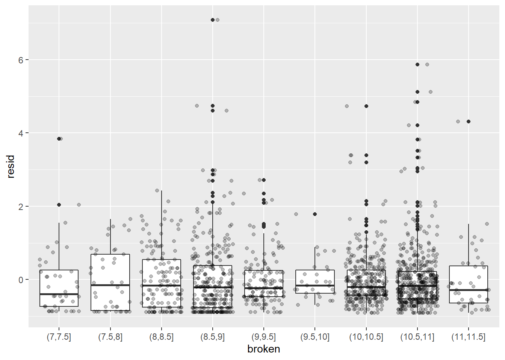
## CI using bootstrapping (1200 times)
dput(round(coef(m1),3))## c(`(Intercept)` = 2.436, age = -0.014, hmo1 = -0.136, died1 = -0.204
## )f <- function(data, i) {
require(VGAM)
m <- vglm(formula = stay ~ age + hmo + died, family = pospoisson(),
data = data[i, ], coefstart = c(2.436, -0.014, -0.136, -0.204))
as.vector(t(coef(summary(m))[, 1:2]))
}
set.seed(10)
res <- boot(dat, f, R = 1200, parallel = "snow", ncpus = 4)
## The results are alternating parameter estimates and standard errors. That is, the first row has the first parameter estimate from our model. The second has the standard error for the first parameter. The third column contains the bootstrapped standard errors.
res##
## ORDINARY NONPARAMETRIC BOOTSTRAP
##
##
## Call:
## boot(data = dat, statistic = f, R = 1200, parallel = "snow",
## ncpus = 4)
##
##
## Bootstrap Statistics :
## original bias std. error
## t1* 2.43580824 1.353730e-03 0.0715294961
## t2* 0.02733232 1.717131e-05 0.0005644024
## t3* -0.01444203 -3.347447e-04 0.0122267387
## t4* 0.00503471 4.363739e-06 0.0001001218
## t5* -0.13590330 -2.166789e-04 0.0519484265
## t6* 0.02374183 6.587369e-05 0.0007743846
## t7* -0.20377089 -3.539928e-04 0.0485653165
## t8* 0.01837281 3.137670e-05 0.0003451768## The original scale with percentile and basic bootstrap CIs
## basic parameter estimates with percentile and bias adjusted CIs
parms <- t(sapply(c(1, 3, 5, 7), function(i) {
out <- boot.ci(res, index = c(i, i + 1), type = c("perc", "basic"))
with(out, c(Est = t0, pLL = percent[4], pUL = percent[5],
basicLL = basic[4], basicLL = basic[5]))
}))
## add row names
row.names(parms) <- names(coef(m1))
## print results
parms## Est pLL pUL basicLL basicLL
## (Intercept) 2.43580824 2.29847349 2.582309282 2.28930719 2.57314298
## age -0.01444203 -0.03955533 0.009766209 -0.03865026 0.01067128
## hmo1 -0.13590330 -0.23858984 -0.034864002 -0.23694259 -0.03321675
## died1 -0.20377089 -0.29684126 -0.112926767 -0.29461502 -0.11070052## exponentiated parameter estimates with percentile and bias adjusted CIs
expparms <- t(sapply(c(1, 3, 5, 7), function(i) {
out <- boot.ci(res, index = c(i, i + 1), type = c("perc", "basic"), h = exp)
with(out, c(Est = t0, pLL = percent[4], pUL = percent[5],
basicLL = basic[4], basicLL = basic[5]))
}))
## add row names
row.names(expparms) <- names(coef(m1))
## print results
expparms## Est pLL pUL basicLL basicLL
## (Intercept) 11.4250491 9.9589684 13.2276493 9.6224489 12.8911299
## age 0.9856618 0.9612168 1.0098141 0.9615095 1.0101068
## hmo1 0.8729270 0.7877379 0.9657367 0.7801173 0.9581162
## died1 0.8156492 0.7431620 0.8932161 0.7380824 0.8881365## Predicting
## get predicted values for all possible combinations.
newdata <- expand.grid(age = 1:9, hmo = factor(0:1), died = factor(0:1))
newdata$yhat <- predict(m1, newdata, type = "response")
ggplot(newdata, aes(x = age, y = yhat, colour = hmo)) +
geom_point() +
geom_line() +
facet_wrap(~ died)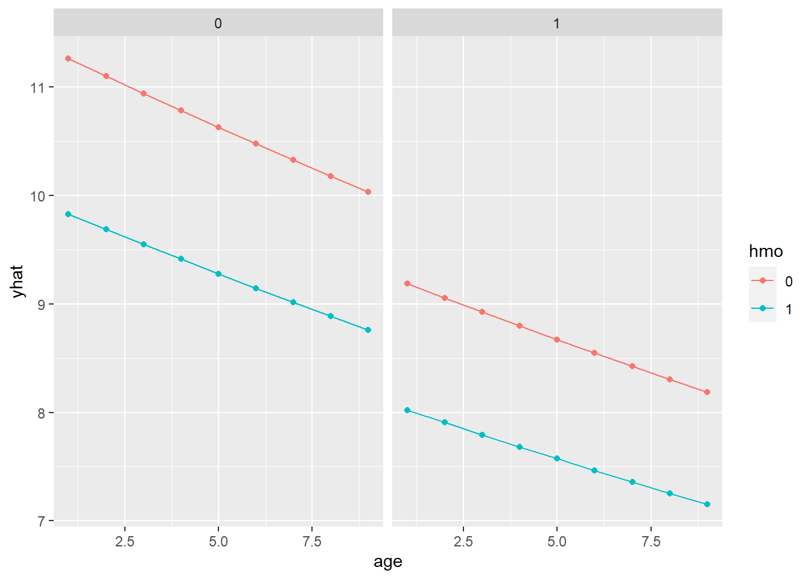
## More: bootstrap confidence intervals around the predicted estimates.
## https://stats.idre.ucla.edu/r/dae/zero-truncated-poisson/15.5 Zero-Insflated Model
15.5.1 Model
Zero-inflated poisson regression is used to model count data that has an excess of zero counts. Further, theory suggests that the excess zeros are generated by a separate process from the count values and that the excess zeros can be modeled independently. Thus, the zip model has two parts, a poisson count model and the logit model for predicting excess zeros.
假设健康调查期间记录的变量之一是受访者昨天吸烟的香烟数量。一些答复者可能报告吸烟量为零。有两种可能的情况：要么被调查者根本不抽烟，要么那天他们碰巧不抽一根烟。就是说，当受访者的行为不在所研究的行为表目范围内（例如，某人不吸烟）时，观察到的零可能是结构性零，或者当受访者的典型行为落在被调查者的行为范围内时，观察到的零可能是机会零。 结构零的存在会使Poisson模型中的零数目膨胀，这使Poisson模型无效，而应使用零膨胀的Poisson模型（通常缩写为ZIP）。 ZIP模型试图通过将响应变量y视为假设概率为零（概率为π）（结构为零的情况），否则将概率为零，则将概率为零的概率从计数零中分离出来泊松分布的比率为λ。
The zero-inflated model is a two-component mixed model that combines the point mass of zero mass with the count distribution (such as Poisson, geometric or negative binomial). In the zero-inflated Poisson regression model with predictor variables \(x_{1}, \ldots, x_{k}\), the response variable \(y\) has a probability distribution defined as follows:
\[ \mathbb{P}(Y=y)=\left\{\begin{array}{ll} \pi+(1-\pi) \exp \{-\lambda\}, & \text { if } y=0 \\ (1-\pi) \frac{\lambda^{y} \exp \{-\lambda\}}{y !}, & \text { if } y=1,2, \ldots, \end{array}\right. \] where \[ \pi=\frac{\exp \left\{\beta_{0}+\beta_{1} x_{1}+\cdots+\beta_{m} x_{m}\right\}}{1+\exp \left\{\beta_{0}+\beta_{1} x_{1}+\cdots+\beta_{m} x_{m}\right\}} \] and \[ \lambda=\exp \left\{\gamma_{0}+\gamma_{1} x_{m+1}+\cdots+\gamma_{k-m} x_{k}\right\} \] For modeling, a binary model was used: in the simplest case, it only has an intercept but may contain regression variables. Formally, zero inflation density is zero mass \(\pi=f_{\text {zero }}(0; z, \gamma)\) and count distribution \(f_{\text {count }}(y; x, \beta) \quad\) (Mixed. \[ f_{\text {zeroinfl }}(y; x, z, \beta, \gamma)=f_{\text {zero }}(0; z, \gamma) \cdot I_{\{0\}}(y )+\left(1-f_{\text {zero }}(0; z, \gamma)\right) \cdot f_{\text {count }}(y; x, \beta) \] where \(I(\cdot)\) is the indicator function and the unobserved probability (the unobserved probability of belonging to the point mass component) \(\pi\) of belonging to the point mass component is modelled by a binomial GLM \(\pi=g ^{-1}\left(z^{\top} \gamma\right)\). The corresponding regression equation for the mean is \[ \mu_{i}=\pi_{i} \cdot 0+\left(1-\pi_{i}\right) \cdot \exp \left(x_{i}^{\top} \beta\right) \] using the canonical log link.
15.5.2 Interpretation of Estimated Coefficients
the estimated parameters are \[ \widehat{\pi}=\frac{\exp \left\{\widehat{\beta}_{0}+\widehat{\beta}_{1} x_{1}+\cdots+\widehat{\beta}_{m} x_{m}\right\}}{1+\exp \left\{\widehat{\beta}_{0}+\widehat{\beta}_{1} x_{1}+\cdots+\widehat{\beta}_{m} x_{m}\right\}} \] \[ \widehat{\lambda}=\exp \left\{\widehat{\gamma}_{0}+\widehat{\gamma}_{1} x_{m+1}+\cdots+\widehat{\gamma}_{k-m} x_{k}\right\} \] When we interpret the estimated gamma coefficient, we can assume that π is fixed, so its interpretation is the same as that in the Poisson regression mode
- If a predictor variable \(x_{1}\) is numeric, then the estimated regression parameter \(\beta_{1}\) can be interpreted as the estimated change in the log-odds for every unit increase in \(x_{1}\), holding all the other predictors fixed. Indeed, if \(x_{1}\) is replaced by \(x_{1}+1\), the difference in estimated log-odds is \[ \begin{array}{c} \ln \frac{\pi\left(x_{1}+1\right)}{1-\pi\left(x_{1}+1\right)}-\ln \frac{\pi\left(x_{1}\right)}{1-\pi\left(x_{1}\right)} \\ =\widehat{\beta}_{0}+\widehat{\beta}_{1}\left(x_{1}+1\right)+\widehat{\beta}_{2} x_{2}+\cdots+\widehat{\beta}_{k} x_{k}-\left(\hat{\beta}_{0}+\widehat{\beta}_{1} x_{1}+\cdots+\widehat{\beta}_{k} x_{k}\right)=\widehat{\beta}_{1} \end{array} \] Alternatively, the quantity \(\left(\exp \left\{\widehat{\beta}_{1}\right\}-1\right) \cdot 100 \%\) represents the estimated percent change in odds when \(x_{1}\) is increased by one unit, and the other predictors are held fixed. This can be seen by writing: \[ \begin{array}{c} \frac{\pi\left(x_{1}+1\right)}{\frac{1-\pi\left(x_{1}+1\right)}{1-\left(x_{1}\right)}}{\frac{\pi\left(x_{1}\right)}{1-\pi\left(x_{1}\right)} \cdot 100 \%}=\left(\frac{\frac{\pi}{1-\bar{n}\left(x_{1}+1\right)}}{\frac{\pi\left(x_{1}\right)}{1-\pi\left(x_{1}\right)}}-1\right) \cdot 100 \% \\ =\left(\frac{\exp \left\{\beta_{0}+\beta_{1}\left(x_{1}+1\right)+\beta_{2} x_{2}+\cdots+\beta_{k} x_{k}\right\}}{\exp \left\{\tilde{\beta}_{0}+\tilde{\beta}_{1} x_{1}+\cdots+\tilde{\beta}_{k} x_{k}\right\}}-1\right) \cdot 100 \%=\left(\exp \left\{\widehat{\beta}_{1}\right\}-1\right) \cdot 100 \% \end{array} \] \(\bullet\) If a predictor variable \(x_{1}\) is an indicator variable, then the estimated parameter \(\beta_{1}\) can be interpreted as the estimated difference in log-odds when \(x_{1}=1\) and when \(x_{1}=0\), controlling for all the other predictors. To see that, we write \[ \begin{array}{c} \ln \frac{\pi\left(x_{1}=1\right)}{1-\pi\left(x_{1}=1\right)}-\ln \frac{\pi\left(x_{1}=0\right)}{1-\pi\left(x_{1}=0\right)} \\ =\widehat{\beta}_{0}+\widehat{\beta}_{1} \cdot 1+\hat{\beta}_{2} x_{2}+\cdots+\widehat{\beta}_{k} x_{k}-\left(\widehat{\beta}_{0}+\widehat{\beta}_{1} \cdot 0+\widehat{\beta}_{2} x_{2}+\cdots+\widehat{\beta}_{k} x_{k}\right)=\widehat{\beta}_{1} \end{array} \] Alternatively, the estimated ratio of odds for \(x 1=1\) and that for \(x 1=0\), expressed as percentage, is hence, the quantity \(\exp \left\{\widehat{\beta}_{1}\right\} \cdot 100 \%\) represents the estimated percent ratio in odds when \(x_{1}=1\) and when \(x_{1}=0\), while the other predictors are held constant.
15.5.3 SAS Implementation
data smoking;
input gender$ health$ age cigarettes @@;
cards;
M good 34 3 F exclnt 48 1 M exclnt 26 0 M good 39 0
F good 27 1 M good 28 5 F good 44 1 M exclnt 30 0
F exclnt 26 0 F good 38 2 F good 40 1 F exclnt 31 0
M good 27 3 F exclnt 34 1 F good 36 2 F exclnt 34 2
F exclnt 39 0 F good 42 1 F good 48 4 M good 32 5
M good 47 2 M good 29 3 M exclnt 38 0 F good 50 4
M good 30 3 M good 38 2 M good 31 6 F exclnt 33 0
F good 28 0 F good 42 3 M exclnt 28 0 M good 31 2
F exclnt 31 0 F exclnt 42 0 F good 44 4 F good 39 1
M good 40 6 M good 39 3 M exclnt 25 0 F good 45 2
;
proc genmod;
class gender(ref='F') health(ref='good');
model cigarettes=gender age/dist=zip;
zeromodel health;
run;
## Full Log Likelihood -57.0406
## Analysis Of Maximum Likelihood Parameter Estimates
## Analysis Of Maximum Likelihood Zero Inflation Parameter Estimates
proc genmod;
model cigarettes=/dist=zip;
zeromodel;
run;
## Full Log Likelihood -71.3892
## Model Fit
data deviance_test;
deviance=-2*(-71.3892-(-57.0406));
pvalue=1-probchi(deviance,3);
run;
## Prediction
data prediction;
input gender$ health$ age;
cards;
M good 50
;
data smoking;
set smoking prediction;
run;
proc genmod;
class gender(ref='F') health(ref='good');
model cigarettes=gender age/dist=zip;
zeromodel health;
output out=outdata p=pred_cig;
run;
proc print data=outdata(firstobs=41 obs=41);
var pred_cig;
run;15.5.4 R Implementation
require(ggplot2)
require(pscl)
require(boot)
zinb <- read.csv("https://stats.idre.ucla.edu/stat/data/fish.csv")
zinb <- within(zinb, {
nofish <- factor(nofish)
livebait <- factor(livebait)
camper <- factor(camper)
})
summary(zinb)## nofish livebait camper persons child xb
## 0:176 0: 34 0:103 Min. :1.000 Min. :0.000 Min. :-3.275050
## 1: 74 1:216 1:147 1st Qu.:2.000 1st Qu.:0.000 1st Qu.: 0.008267
## Median :2.000 Median :0.000 Median : 0.954550
## Mean :2.528 Mean :0.684 Mean : 0.973796
## 3rd Qu.:4.000 3rd Qu.:1.000 3rd Qu.: 1.963855
## Max. :4.000 Max. :3.000 Max. : 5.352674
## zg count
## Min. :-5.6259 Min. : 0.000
## 1st Qu.:-1.2527 1st Qu.: 0.000
## Median : 0.6051 Median : 0.000
## Mean : 0.2523 Mean : 3.296
## 3rd Qu.: 1.9932 3rd Qu.: 2.000
## Max. : 4.2632 Max. :149.000## histogram with x axis in log10 scale
ggplot(zinb, aes(count)) + geom_histogram() + scale_x_log10()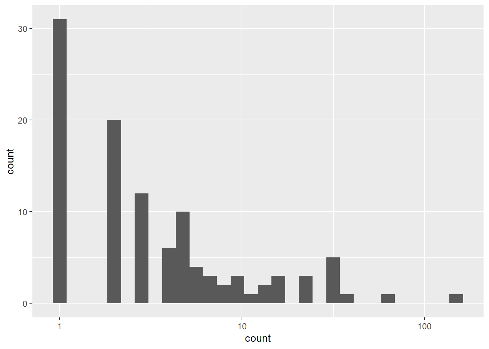
## Zero-inflated Poisson regression pscl package
summary(m1 <- zeroinfl(count ~ child + camper | persons, data = zinb))##
## Call:
## zeroinfl(formula = count ~ child + camper | persons, data = zinb)
##
## Pearson residuals:
## Min 1Q Median 3Q Max
## -1.2369 -0.7540 -0.6080 -0.1921 24.0847
##
## Count model coefficients (poisson with log link):
## Estimate Std. Error z value Pr(>|z|)
## (Intercept) 1.59789 0.08554 18.680 <2e-16 ***
## child -1.04284 0.09999 -10.430 <2e-16 ***
## camper1 0.83402 0.09363 8.908 <2e-16 ***
##
## Zero-inflation model coefficients (binomial with logit link):
## Estimate Std. Error z value Pr(>|z|)
## (Intercept) 1.2974 0.3739 3.470 0.000520 ***
## persons -0.5643 0.1630 -3.463 0.000534 ***
## ---
## Signif. codes: 0 '***' 0.001 '**' 0.01 '*' 0.05 '.' 0.1 ' ' 1
##
## Number of iterations in BFGS optimization: 10
## Log-likelihood: -1032 on 5 Df## follows that corresponds to the inflation model includes logit coefficients for predicting excess zeros along with their standard errors, z-scores, and p-values.
## Compare with the current model to a null model without predictors using chi-squared test on the difference of log likelihoods.
## This model fits the data significantly better than the null model, i.e., the intercept-only model.
mnull <- update(m1, . ~ 1)
pchisq(2 * (logLik(m1) - logLik(mnull)), df = 3, lower.tail = FALSE)## 'log Lik.' 4.041242e-41 (df=5)## running the corresponding standard Poisson model and then performing a Vuong test of the two models.
## test statistic is significant, indicating that the zero-inflated model is superior to the standard Poisson model
summary(p1 <- glm(count ~ child + camper, family = poisson, data = zinb))##
## Call:
## glm(formula = count ~ child + camper, family = poisson, data = zinb)
##
## Deviance Residuals:
## Min 1Q Median 3Q Max
## -3.7736 -2.2293 -1.2024 -0.3498 24.9492
##
## Coefficients:
## Estimate Std. Error z value Pr(>|z|)
## (Intercept) 0.91026 0.08119 11.21 <2e-16 ***
## child -1.23476 0.08029 -15.38 <2e-16 ***
## camper1 1.05267 0.08871 11.87 <2e-16 ***
## ---
## Signif. codes: 0 '***' 0.001 '**' 0.01 '*' 0.05 '.' 0.1 ' ' 1
##
## (Dispersion parameter for poisson family taken to be 1)
##
## Null deviance: 2958.4 on 249 degrees of freedom
## Residual deviance: 2380.1 on 247 degrees of freedom
## AIC: 2723.2
##
## Number of Fisher Scoring iterations: 6vuong(p1, m1)## Vuong Non-Nested Hypothesis Test-Statistic:
## (test-statistic is asymptotically distributed N(0,1) under the
## null that the models are indistinguishible)
## -------------------------------------------------------------
## Vuong z-statistic H_A p-value
## Raw -3.574259 model2 > model1 0.00017561
## AIC-corrected -3.552397 model2 > model1 0.00019087
## BIC-corrected -3.513904 model2 > model1 0.00022079## get confidence intervals for the parameters and the exponentiated parameters using bootstrapping.
dput(coef(m1, "count"))## c(`(Intercept)` = 1.59788890535741, child = -1.04283980037201,
## camper1 = 0.834022175460643)dput(coef(m1, "zero"))## c(`(Intercept)` = 1.29743873378692, persons = -0.564347227953224
## )f <- function(data, i) {
require(pscl)
m <- zeroinfl(count ~ child + camper | persons, data = data[i, ],
start = list(count = c(1.598, -1.0428, 0.834), zero = c(1.297, -0.564)))
as.vector(t(do.call(rbind, coef(summary(m)))[, 1:2]))
}
set.seed(10)
res <- boot(zinb, f, R = 1200, parallel = "snow", ncpus = 4)
## basic parameter estimates with percentile and bias adjusted CIs
parms <- t(sapply(c(1, 3, 5, 7, 9), function(i) {
out <- boot.ci(res, index = c(i, i + 1), type = c("perc", "bca"))
with(out, c(Est = t0, pLL = percent[4], pUL = percent[5],
bcaLL = bca[4], bcaLL = bca[5]))
}))
## add row names
row.names(parms) <- names(coef(m1))
## print results
parms## Est pLL pUL bcaLL bcaLL
## count_(Intercept) 1.5978885 0.929548809 2.0891957 1.052591464 2.21402500
## count_child -1.0428385 -1.778733547 -0.1686651 -1.727480382 -0.09541710
## count_camper1 0.8340222 0.008795793 1.5978058 0.001069699 1.58913696
## zero_(Intercept) 1.2974392 0.458982712 2.2596422 0.441060605 2.21684371
## zero_persons -0.5643472 -1.100952918 -0.1167136 -1.061884331 -0.03569355## compare with normal based approximation
confint(m1)## 2.5 % 97.5 %
## count_(Intercept) 1.4302372 1.7655406
## count_child -1.2388133 -0.8468663
## count_camper1 0.6505171 1.0175273
## zero_(Intercept) 0.5647018 2.0301756
## zero_persons -0.8837504 -0.244944015.6 Hurdle models
A hurdle model is a class of statistical models where a random variable is modelled using two parts, the first which is the probability of attaining value 0, and the second part models the probability of the non-zero values.
障碍模型是一类统计模型，其中随机变量使用两部分建模，第一部分是达到值 0 的概率，第二部分是非零值的概率建模。
15.6.1 Model
Formally, the hurdle model combines a count data model \(f_{\text {count }}(y ; x, \beta)\) (that is lefttruncated at \(y=1\) ) and a zero hurdle model \(f_{\text {zero }}(y ; z, \gamma)\) (right-censored at \(y=1\) ): \[ f_{\text {hurdle }}(y ; x, z, \beta, \gamma)=\left\{\begin{array}{ll}f_{\text {zero }}(0 ; z, \gamma) & \text { if } y=0, \\ \left(1-f_{\text {zero }}(0 ; z, \gamma)\right) \cdot f_{\text {count }}(y ; x, \beta) /\left(1-f_{\text {count }}(0 ; x, \beta)\right) & \text { if } y>0\end{array}\right. \] When the response variable y has a Poisson distribution with zero inflation, hurdle Poisson regression will be applied. In addition, it is reasonable to believe that the basic characteristics of the zero-response case are systematically different from the positive and weekly case. In other words, zero is modeled separately from the zero-cut Poisson observations. Therefore, for the predictor variables \(x_{1}, \ldots, x_{k},\), the barrier Poisson regression model assumes that the response variable \(y\) has a probability distribution function \[ \mathbb{P}(Y=y)=\left\{\begin{array}{ll} \pi, & \text {if} y=0 \\ (1-\pi) \frac{\lambda^{y} \exp \{-\lambda\}}{y !(1-\exp \{-\lambda\})}, & \text {if} y =1,2, \ldots, \end{array}\right. \] where \[ \pi=\frac{\exp \left\{\beta_{0}+\beta_{1} x_{1}+\cdots+\beta_{m} x_{m}\right\}}{1+\exp \ left\{\beta_{0}+\beta_{1} x_{1}+\cdots+\beta_{m} x_{m}\right\}} \] and \[ \lambda=\exp \left\{\gamma_{0}+\gamma_{1} x_{m+1}+\cdots+\gamma_{k-m} x_{k}\right\} \] The distribution of y is a mixture of the degenerate distribution at zero and the zero-cut Poisson distribution. This distribution is not in the exponential family, so the barrier Poisson model is not a generalized linear model.
15.6.2 SAS Implementation
proc fmm data=data name;
class <list of categorical predictors>;
model response name = <list of predictors>/dist=truncpoisson;
model + /dist=constant;
probmodel <list of predictors of zeros>;
run;
data bookstore;
input ntextbooks renting aid$ @@;
cards;
0 3 no 0 2 no 3 0 yes 0 0 no 0 1 no 1 0 no
0 3 no 2 0 yes 4 0 no 0 2 no 4 1 no 7 0 yes
3 2 yes 0 4 no 1 2 no 0 0 no 0 5 no 1 0 no
0 2 no 3 0 no 0 3 no 6 1 yes 2 1 yes 1 0 no
6 0 yes 2 0 no 0 3 no 4 0 yes 0 1 no 0 2 no
3 0 no 3 2 no 3 0 yes 2 0 yes 0 3 no 2 1 no
3 0 yes 1 3 no 3 0 yes 0 2 no
proc format;
value $aidfmt 'no'='ref' 'yes'='aid';
run;
proc fmm;
class aid;
model ntextbooks=aid/dist=truncpoisson;
model+/dist=constant;
probmodel renting;
format aid $aidfmt.;
run;15.6.3 R Implementation
path <- getwd()
load(file.path(path,"01_Datasets/DebTrivedi.rda"))
## Show summary
summary(DebTrivedi)## ofp ofnp opp opnp
## Min. : 0.000 Min. : 0.000 Min. : 0.0000 Min. : 0.0000
## 1st Qu.: 1.000 1st Qu.: 0.000 1st Qu.: 0.0000 1st Qu.: 0.0000
## Median : 4.000 Median : 0.000 Median : 0.0000 Median : 0.0000
## Mean : 5.774 Mean : 1.618 Mean : 0.7508 Mean : 0.5361
## 3rd Qu.: 8.000 3rd Qu.: 1.000 3rd Qu.: 0.0000 3rd Qu.: 0.0000
## Max. :89.000 Max. :104.000 Max. :141.0000 Max. :155.0000
## emer hosp health numchron adldiff
## Min. : 0.0000 Min. :0.000 poor : 554 Min. :0.000 no :3507
## 1st Qu.: 0.0000 1st Qu.:0.000 average :3509 1st Qu.:1.000 yes: 899
## Median : 0.0000 Median :0.000 excellent: 343 Median :1.000
## Mean : 0.2635 Mean :0.296 Mean :1.542
## 3rd Qu.: 0.0000 3rd Qu.:0.000 3rd Qu.:2.000
## Max. :12.0000 Max. :8.000 Max. :8.000
## region age black gender married
## midwest:1157 Min. : 6.600 no :3890 female:2628 no :2000
## noreast: 837 1st Qu.: 6.900 yes: 516 male :1778 yes:2406
## other :1614 Median : 7.300
## west : 798 Mean : 7.402
## 3rd Qu.: 7.800
## Max. :10.900
## school faminc employed privins medicaid
## Min. : 0.00 Min. :-1.0125 no :3951 no : 985 no :4004
## 1st Qu.: 8.00 1st Qu.: 0.9122 yes: 455 yes:3421 yes: 402
## Median :11.00 Median : 1.6982
## Mean :10.29 Mean : 2.5271
## 3rd Qu.:12.00 3rd Qu.: 3.1728
## Max. :18.00 Max. :54.8351## Load pscl
library(pscl)
## Load sandwich package for robust sandwich covariance matrix estimators
library(sandwich)
## Load lmtest package for coeftest
library(lmtest)
## Load MASS for glm.nb
library(MASS)
## Create a formula
formula <- ofp ~ hosp + health + numchron + gender + school + privins
## Poisson regression
## Fit Poisson
modelPoisson <- glm(formula = formula,
family = poisson(link = "log"),
data = DebTrivedi)
## Test using robust sandwich covariance matrix estimators
coeftest(modelPoisson, vcov = sandwich)##
## z test of coefficients:
##
## Estimate Std. Error z value Pr(>|z|)
## (Intercept) 1.028874 0.064530 15.9442 < 2.2e-16 ***
## hosp 0.164797 0.021945 7.5095 5.935e-14 ***
## healthpoor 0.248307 0.054022 4.5964 4.298e-06 ***
## healthexcellent -0.361993 0.077449 -4.6740 2.954e-06 ***
## numchron 0.146639 0.012908 11.3605 < 2.2e-16 ***
## gendermale -0.112320 0.035343 -3.1780 0.001483 **
## school 0.026143 0.005084 5.1422 2.715e-07 ***
## privinsyes 0.201687 0.043128 4.6765 2.919e-06 ***
## ---
## Signif. codes: 0 '***' 0.001 '**' 0.01 '*' 0.05 '.' 0.1 ' ' 1## Fit quasi-Poisson
modelQuasiPoisson <- glm(formula = formula,
family = quasipoisson(link = "log"),
data = DebTrivedi)
## Fit negative binomial
modelNB <- glm.nb(formula = formula,
data = DebTrivedi)
## Fit zeroinfl
modelZeroInfl <- zeroinfl(formula = formula,
dist = "negbin",
data = DebTrivedi)
## Fit hurdle
modelHurdle <- hurdle(formula = formula,
dist = "negbin",
data = DebTrivedi)
summary(modelHurdle)##
## Call:
## hurdle(formula = formula, data = DebTrivedi, dist = "negbin")
##
## Pearson residuals:
## Min 1Q Median 3Q Max
## -1.1718 -0.7080 -0.2737 0.3196 18.0092
##
## Count model coefficients (truncated negbin with log link):
## Estimate Std. Error z value Pr(>|z|)
## (Intercept) 1.197699 0.058973 20.309 < 2e-16 ***
## hosp 0.211898 0.021396 9.904 < 2e-16 ***
## healthpoor 0.315958 0.048056 6.575 4.87e-11 ***
## healthexcellent -0.331861 0.066093 -5.021 5.14e-07 ***
## numchron 0.126421 0.012452 10.152 < 2e-16 ***
## gendermale -0.068317 0.032416 -2.108 0.0351 *
## school 0.020693 0.004535 4.563 5.04e-06 ***
## privinsyes 0.100172 0.042619 2.350 0.0188 *
## Log(theta) 0.333255 0.042754 7.795 6.46e-15 ***
## Zero hurdle model coefficients (binomial with logit link):
## Estimate Std. Error z value Pr(>|z|)
## (Intercept) 0.043147 0.139852 0.309 0.757688
## hosp 0.312449 0.091437 3.417 0.000633 ***
## healthpoor -0.008716 0.161024 -0.054 0.956833
## healthexcellent -0.289570 0.142682 -2.029 0.042409 *
## numchron 0.535213 0.045378 11.794 < 2e-16 ***
## gendermale -0.415658 0.087608 -4.745 2.09e-06 ***
## school 0.058541 0.011989 4.883 1.05e-06 ***
## privinsyes 0.747120 0.100880 7.406 1.30e-13 ***
## ---
## Signif. codes: 0 '***' 0.001 '**' 0.01 '*' 0.05 '.' 0.1 ' ' 1
##
## Theta: count = 1.3955
## Number of iterations in BFGS optimization: 16
## Log-likelihood: -1.209e+04 on 17 Df## The hurdle part can be fit as follows.
hurdlePart <- glm(formula = I(ofp>0) ~ hosp + health + numchron + gender + school + privins,
data = DebTrivedi,
family = binomial(link = "logit"))
coef(summary(hurdlePart))## Estimate Std. Error z value Pr(>|z|)
## (Intercept) 0.043146759 0.13985098 0.30851954 7.576870e-01
## hosp 0.312448581 0.09142785 3.41743329 6.321458e-04
## healthpoor -0.008715843 0.16102047 -0.05412879 9.568326e-01
## healthexcellent -0.289570220 0.14268122 -2.02949079 4.240833e-02
## numchron 0.535212638 0.04537732 11.79471576 4.156014e-32
## gendermale -0.415658035 0.08760732 -4.74455816 2.089619e-06
## school 0.058541233 0.01198922 4.88282047 1.045791e-06
## privinsyes 0.747119813 0.10087846 7.40613843 1.300301e-13## Exponentiated coefficients
expCoef <- exp(coef((modelHurdle)))
expCoef <- matrix(expCoef, ncol = 2)
rownames(expCoef) <- names(coef(hurdlePart))
colnames(expCoef) <- c("Count_model","Zero_hurdle_model")
expCoef## Count_model Zero_hurdle_model
## (Intercept) 3.3124858 1.0440911
## hosp 1.2360220 1.3667677
## healthpoor 1.3715721 0.9913220
## healthexcellent 0.7175870 0.7485852
## numchron 1.1347593 1.7078113
## gendermale 0.9339643 0.6599059
## school 1.0209088 1.0602887
## privinsyes 1.1053606 2.1109114## LRT to compare two models
## hurdle part without health
modelHurdleSimpler <- hurdle(formula = ofp ~ hosp + health + numchron + gender + school + privins | hosp + numchron + gender + school + privins, dist = "negbin", data = DebTrivedi)
lmtest::lrtest(modelHurdle, modelHurdleSimpler)## Likelihood ratio test
##
## Model 1: ofp ~ hosp + health + numchron + gender + school + privins
## Model 2: ofp ~ hosp + health + numchron + gender + school + privins |
## hosp + numchron + gender + school + privins
## #Df LogLik Df Chisq Pr(>Chisq)
## 1 17 -12088
## 2 15 -12090 -2 3.9875 0.1362